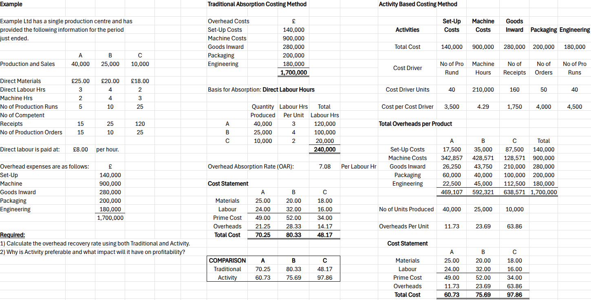

Welcome to A|K
Here we cover everything Accounting, including;
- Management Accounting.
- Financial Accounting.
- Taxation.
- Investments.
- Auditing.
- Accounts Assistants - an entry-level position.
We'll break into sub-topics of each, including variance analysis and budgeting for management, financial statements and bookkeeping for financial, along with self assessment for individuals and corporation tax for companies in regards to taxation, different types of shares and bonds, as well as diverse investment porfolios, different internal controls for businesses, the responsibilities of auditors, and much more.
To give the best experience while on our site, we would encourage that you view our Legal Structures page first, as this is the anchor we use for all of our topics and sub-topics. We'll be using the legal structures of business to curate how we deliver management, financial, and taxation, so understanding these are important as we progress.
Hi Napier Admissions team, as you consider my appllication for entry into BA (Hons) Accounting 3rd year - however, late I may be, of which I do apologiese. Please take this time to review the work I have put into placing all of my studies into a single website. I hope that one day (should building my own accounting software be unsuccesful) I can teach trainees coming from degrees, HND/C's or AAT into becoming fully fledged Ch Accountants!
Legal Structures
Before we explore accounting in depth, it's important to understand that the type of business structure shapes almost every part of the accounting process - from how profits are calculated and taxed, to who has reporting obligations, and even how decisions are made.
We're going to cover the most common forms of businesses in the UK, and those are;
- Sole-Trader
- Partnerships
- Private Limited Company (Ltd)
- Public Limited Company (Plc)
Note: Partnerships are comprised of Ordinary, Limited, and Limited Liability.
These aren't just legal labels - they define the responsibilities of owners, the extent of liability, the tax rules applied, and the kind of financial statements prepared.
Throughout this website, you'll notice that accounting topics - whether in management, financial, or taxation - are explained with reference to these business types. This gives each concept a practical footing and prepares you to apply your knowledge in the real world, whether you're sitting an exam, or advising a client.
Sole Traders
In the UK, a sole trader is the simplest and most common business structure, where the business is owned by one person. From a legal view, the business and the individual owning it, are a single entity (they are one in the same). This means that there are; Legal and Accounting, Personal Liability, Financial Reporting Standards, and Taxation, that are implicatied for the business owner personally (again, they are one, not separate).
Legal and Accounting
The taxable profits of a sole trader are taxed as personal income for the owner of the business, this is where they will pay Income Tax and National Insurance Contributions – similar to that of an employee.
Extent of Personal Liability
Due to sole traders and their owners being viewed as one by the law, not only is their income regarded as personal, as are their liabilities; meaning, all liabilities (creditors – suppliers, banks, customers), are the business owner’s responsibility. This opens them up to lawsuits regarding the seizure of personal assets (property, savings, vehicles etc) for repaying back money owed to creditors.
Financial Reporting Standards
Sole Traders do not have any responsibilities as far as statutory reporting goes, at least as far as the law is concerned. However, they must document and report to HMRC a list of incomes and expenses generates within the financial year, along with file their taxes in their self-assessment.
Despite their being no legal obligation besides incomes and expenses, it is best practice for Sole Traders to document their finances as any company would.
Doing so would better allow them to plan, budget for and prepare for the period/s ahead. It does not need to be as extensive as companies, but the better they are, the better prepared they will be.
Taxation
As we know, sole traders are taxed as individuals, and are subject to Income Tax and National Insurance Contributions, however, another key aspect of taxation for sole traders, would be their pension contributions too. Before we get to the rates of Income Tax, NI Contributions and Pensions – let's first explain how a pension would work for a sole trader.
Pensions contributions are broken down into two main categories, Public and Private. A public pension would be tailored for those more situated within a civil servant role, for example, NHS, Government, Police, Ambulance Service, Fire Service etc. A sole trader would not find themselves to be within this category, however, this is still relevant in the case where the owner of a sole trader was previously within such roles. A private pension would be tailored for those more situated within a role that does not full under the purview of a civil servant, someone like a business owner.
If the owner of a sole trader has a public pension, contributions to such pot would be prevented – in other words, the account would be frozen preventing contributions to it. However, it will still rise due to inflation, and it will still become available upon retirement age. With the move from a civil servant position to being a business owner, the owner would opt for a private pension, where they can contribute to that. Upon hitting retirement age, the business owner would begin to receive both public and private contributions that they made as income.
Because the sole trader’s income is taxed as personal income, the question arises to whether taxable income is reduced by the contributions, and how HMRC view it. To simplify things, at the end of the financial year, the pension provider will notify the contributor with a summary, detailing their gross pension contributions (the amount in which they contributed, and tax-relief secured), this, along with taxable profits of the sole trader will be submitted to HMRC on/by the 31st January through a Self-Assessment. This is due the following year to the financial year the self-assessment pertains to.
As for contributions to the pension pot, there are limitation to the amount contributed, and implications in going over them. You can find this below, along with rates etc.
Income Tax 24/25 (Scotland)
| Tax Band | Income Range | Tax Rate |
|---|---|---|
| Personal Allowance | £0 - £12,570 | 0% (Tax-Free) |
| Starter Rate | £12,571 – £15,397 | 19% |
| Basic Rate | £15,398 - £27,491 | 20% |
| Intermediate Rate | £27,492 - £43,662 | 21% |
| Higher Rate | £43,663 - £75,000 | 42% |
| Advanced Rate | £75,001 - £125,140 | 45% |
| Top Rate | £125,140 + | 48% |
National Insurance Contributions 24/25
For National Insurance, there are: Class 2 and Class 4:
Class 2
- £3.45/pw on Taxable Profits of £6,725 + (PA).
Class 4
- 8% on Taxable Profits between Personal Allowance to £50,270 (PA).
- 2% on Taxable Profits £50,270 + (PA).
I.e., if you have taxable profits above £6,725 - you pay £3.45 per week. If taxable profits are between £12,570 and £50,270 - you pay £3.25 per week + 8%. And lastly, if taxable profits are above £50,270 - you pay £3.45 per week + 10% (8%+2%).
Pension Contributions
Each tax year, there is a limited on the amount in which can be contributed to your pension pot, and still receive tax relief. This is called the Annual Allowance.
The standard annual allowance (24/25) is £60,000 - across all pension pots you may have. This limit also includes contributions made personally, or by your employer etc.
Partnerships
Private Limited Companies (Ltd)
Public Limited Companies (Plc)
Management Accounting
Management accounting is a branch of accounting focused on providing financial and non-financial information to managers within an organisation to help them make informed business decisions. Thiis helps businesses improve efficiency through better cost control, support strategic decisions like lanuching a new product, or entering a new market, to anticipate problems and manage them, as well as track performaces of staff, goals etc.
1. Overhead Absorption
Overhead absorption is the process of absorbing the indirect costs of the business into each unit/service that is provided. Meaning, when a company complies it’s cost statement (in order to determine selling price, cost of a unit/service etc), they consist of direct and indirect costs – direct being those costs directly contributed to the production of the product/service, and indirect being those costs that have nothing to do with the actual production itself, but more so, the costs of the company.
Within a Cost Statement, we'd have;
Material + Labour = Prime Cost + Overheads = Total Cost + Profit Margin = Selling Price.
Now, in theory this is sound, but in reality we’re increasing the amount customers pay for the product/service, which may actually deter customers from buying, and going to competitors instead. Therefore, we want to ensure that we are absorbing overheads as efficiently as possible.
Previously, the go to for absorption was the Traditional Method, which is where we allocate based on a single volume-based cost driver – typically direct labour hours, or machine hours. However, this proved to be ineffective because we would be absorbing costs onto products that did not utilise as much resources as other products, meaning they would be sold for higher prices than others.
More often than not, we see businesses adopting the more accurate and effective means of absorption, which is Activity Based Costing (ABC). This is where we allocate based on multiple activities that drive costs, usually activity-specific cost drivers.
let's go over an exercise to further exlore the workings of Overhead Absorption
Let's assume we have the following data to work with:
| Products | A | B | C |
|---|---|---|---|
| Production | 40,000 | 25,000 | 10,000 |
| Direct Materials | £25 | £20 | £18 |
| Direct Labour Hrs | 3 | 4 | 2 |
| Machine Hrs | 2 | 4 | 3 |
| No. Production Runs | 5 | 10 | 25 |
| Receipts | 15 | 25 | 120 |
| No. Production Orders | 15 | 10 | 25 |
| Direct Labour £8 per hour | |||
| Overhead Expenses as follows: | |||
| Set-Ups | 140,000 | ||
| Machine | 900,000 | ||
| Goods Inwards | 280,000 | ||
| Packaging | 200,000 | ||
| Engineering | 180,000 | ||
| Total | 1,700,000 | ||
Using this data, we're going to explore both Traditional, and Absorption Method of overhead absorption.
Traditional Method
The traditional method is the simplest method, where we take the total indirect expenses of the company and using either machine hours, or direct labour hours to determine the OAR (Overhead Absorption Rate). We then take the OAR and multiply by the machine or direct labour hours, which then gives us the overhead charge per unit – which is added to the cost statement for pricing.
Step 1: If we absorbed based on direct labour hours, we would multiply the level of production per product by the labour hours per product - we then divide the £1.7 million by the total amount - this gives us the OAR:
A: 40,000 * 3 = 120,000
B: 25,000 * 4 = 100,000
C: 10,000 * 2 = 20,000
(120,000 + 100,000 + 20,000 = 240,000).
Then,
1,700,000 / 240,000 = 7.08 OAR
Step 2: We then take the OAR and multiply by the direct labour hour per product;
A: 7.08 * 3 = 21.25
B: 7.08 * 4 = 28.33
C: 7.08 * 2 = 14.17
Therefore, these figures are the overheads attached to the cost statement for pricing per product, as seen below:
| Products | A | B | C |
|---|---|---|---|
| Material | 25.00 | 20.00 | 18.00 |
| Labour | 24.00 | 32.00 | 16.00 |
| Prime Cost | 49.00 | 52.00 | 34.00 |
| Overheads | 21.25 | 28.33 | 14.17 |
| Total Cost | 70.25 | 80.33 | 48.17 |
Activity Based Costing
The activity based method is far more complex, but immensely more accurate. Instead of being driven by direct labour hours or machine hours and production volume, they are driven by specific cost generators, known as Cost Drivers. To determine OAR (which is different per product for activity based method), we first need to cross-reference both data that we have, and the overhead (activity). For example, Set-Up Costs are influenced by the Number of Production Runs.
Using the activity overhead cost and cost driver, we can look at cost driver units and cost per cost driver. The cost driver units will be the cost driver for every product added together, in the example of no. Production runs, it would be the data of: (5 + 10 + 25) = 40. And the cost per cost driver would be the total cost divided by cost driver units. And lastly, we want to multiply the cost per cost drivers and multiply by the proportion of cost driver that comes from each product respectively.
Again, using the same data:
Step 1: Using the examples of activities that we have: Set-up costs, machine costs, goods inwards, packaging, and engineering. We look at the cost driver that would influence it’s total cost. Therefore, we have the following pairs:
| Activities | Cost Driver |
|---|---|
| Setup Costs | No. Production Runs |
| Machine Costs | Machine Hours |
| Goods Inwards | No. Receipts |
| Packaging | No. Orders |
| Engineering | No. Production Runs |
Using these pairs, we then want to take the cost drivers to determine the cost driver units;
| Cost Driver | SUM |
|---|---|
| No. Production Runs | (5 + 10 + 25) = 40 |
| Machine Hours | ((40,000 * 2)+(25,000 * 4)+(10,000 * 3)) = 210,000 |
| No. Receipts | (15 + 25 + 120) = 160 |
| No. Orders | (15 + 10 + 25) = 50 |
| No. Production Runs | (5 + 10 + 25) = 40 |
And then we want to determine the cost per cost driver by dividing the total cost by cost driver units;
140,000 / 40 = 3,500
900,000 / 210,000 = 4.29 (rounded up)
280,000 / 160 = 1,750
200,000 / 50 = 4,000
180,000 / 40 = 4,500
Part 2: Next, we want to take the cost per cost drivers and multiply by the proportion of cost driver that comes from each product respectively. I.e., for no. of production runs we have 15 for A, so we’d divide 3,500 by 15. Therefore;
| Products | A | B | C | Total |
|---|---|---|---|---|
| Set-Up Costs | (3,500 * 5) = 17,500 | (3,500 * 10) = 35,000 | (3,500 * 25) = 87,500 | 140,000 |
| Machine Costs | (4.29 * 40,000 * 2) = 342,857 | (4.29 * 25,000 * 3) = 428,571 | (4.29 * 10.000 * 3) = 128,571 | 900,000 |
| Goods Inwards | (1,750 * 15) = 26,250 | (1,750 * 25) = 43,750 | (1,750 * 120) = 210,000 | 280,000 |
| Packaging | (4,000 * 15) = 60,000 | (4,000 * 10) = 40,000 | (4,000 * 25) = 100,000 | 20,000 |
| Engineering | (4,500 * 5) = 22,500 | (4,500 * 10) = 45,000 | (4,500 * 25) = 112,500 | 180,000 |
| Total | 469,107 | 592,321 | 638,571 | 1,700,000 |
(the 4.29 from machine hours will be 4.29*** exactly so we can't hardcode something like this - it needs to be the exact number).
This gives us our total overheads per product, now the key is to determine per unit, which is simply total per cost products overhead (i.e., 469,107) divided by the number of units produced per product. Therefore;
A: 469,107 / 40,000 = 11.73
B: 592,321 / 25,000 = 23.69
C: 638,571 / 10,000 = 63.86
In conclusion, the figures above (11.73, 23.69, and 63.89), will be attached to the cost statement, as seen below;
| Products | A | B | C |
|---|---|---|---|
| Material | 25.00 | 20.00 | 18.00 |
| Labour | 24.00 | 32.00 | 16.00 |
| Prime Cost | 49.00 | 52.00 | 34.00 |
| Overheads | 11.73 | 23.69 | 63.86 |
| Total Cost | 60.73 | 75.69 | 97.86 |
This ultimately means that for every product sold – or service provided, we cover the costs of producing the product or providing the service, and the overall costs of the company. The big picture is that when we attach a profit margin/mark up, we actually make that as a profit – and this is because we have taken everything into account when pricing products and services.
Key note:
If we compare both methods of overheads absorption, we can see that we come up with different overheads per product;
| Absorption Method | A | B | C |
|---|---|---|---|
| Traditional | 21.25 | 28.33 | 14.17 |
| Activity Based Costing | 11.73 | 23.69 | 63.83 |
Remember, the difference between the both is cost drivers and the allocation based on the level of costs generated by each – traditional considers one, activity based costing considers multiple, which are matched to the level of resources of the business it uses to make products.
Below is a picture of the completed exercise via excel. Note that the comparrison compares the two total costs, not overheads, but the difference is influced by overheads - so makes no difference.
*Click image to expand.
2. Working Capital Management
3. Variance Analysis
4. Relevant Cost and Revenues
5. Capital Investment Appraisal
6. Limiting Factor Analysis
7. Short-Run Decisions
8. Marginal Costing
Financial Accounting
This is the content for the Financial sub-topic.
1. Shares and Debentures
2. Leasing Transactions
3. Long-Term Contracts
4. Publication
5. Accounting Concepts and Legality
6. Consolidated Accounts
Taxation
This is the content for the Taxation sub-topic.
1. BIKs & Income/Savings/Dividends
Benefits in Kind (BiKs)
Benefits in kind consist of employment income which is received in the form of goods or services rather than money. Income tax is charged on all earnings from employment, including benefits in kind. Employees are generally taxed on the cost to the employer of providing the benefit, but some benefits, like a company car, are subject to statutory valuation rules.
Some allowable (tax exempt) benefots include:
- Job related accommodation.
- Removal expenses up to £8,000, anything over has to be charged tax.
- Parking space near work.
- Workplace nurseries (solely used for staff children).
- Provision of 1 mobile phone.
- Access to company gym (must only be used by staff).
- Loans no greater than £10,000 and if greater, or interest is lower than official rate (currently 2.25%) then chargeable.
- Staff party with no more than a total of £150 per staff member.
Statutory Valuation Rules
There are special rules for calculating the taxable benefits in kind arising in relation to:
- Living accommodation.
- Ancillary services connected with living accommodation.
- Assets loaned for private use.
- Cars and fuel provided for private use.
- Vans provided for private use.
- Beneficial loans.
Trivial Benefits
- Benefitd in kind costing no more than £50 are regarded as "trivial" and are excempt from both income tax and national insurance.
- This exception does not apply to cash or cash vouchers and the benefit must not be provided in regognition of particular services performed by the employee.
- The exemption cannot be used to exempt part of a benefit costing over £50.
- The exemption is capped at £300 per tax year for the directors of a close company.
Living Accomodation
- If an employer owns a property which is provided to an employee for use as living accommodation, the basic taxable benefit is equal to the "annual value" of the property.
- If the employer rents the property (rather than owns it), the taxable benefit is the higher of: the annual value of the property, or the rent paid by the employer.
- The taxable benefit is reduced by any contribution made by the employee.
Expensive Living Accommodation
- There is an increase in the taxable benefit if the property cost the employer more than £75,000.
- The cost of a property is equal to its purchase price, plus the cost of any improvements made before the start of the tax year, less any capital contribution made by the employee.
- The increase in the taxable benefit is calculated by applying the "official rate of interest" to the amount by which the cost of the accommodation exceeds £75,000.
- If the house was owned by the employer for more than 6 years before occupation by the employee, market value at occupation may be substituted for cost.
Ancillary Services
- An employee who is provided with living accommodation is also taxed on the cost to the employer of providing any "ancillary services" such as heating, lighting, cleaning etc.
- If the accommodation is job-related, the taxable benefit in relation to ancillary services cannot exceed 10% of the employee's net earnings.
- "Net earnings" means total income from the employment for the year (apart from the ancillary services) less deductible expenses.
Assets Loaned to Employees
- The employee is taxed annually on 20% of the market value of the asset on the date of the loan.
- This is scaled down if the asset is not available to the employee for the whole tax year.
- If the asset is subsequently given or sold to the employee, he or she is taxed on the higher of: the market value of the asset when first loaned to the employee, less the taxable benefits arising during the period of the loan and less any amount paid for the asset by the employee, or the market value of the asset at the date of transfer, less any amount paid for the asset by the employee.
Cars Provided for Private Use
- Employees are taxed on the provision of a motor car for private use.
- The taxable benefit is based upon the list price of the car when new (reduced by any capital contribution made by the employee up to a maximum of £5,000).
- The taxable benenfit is calculated by applying a percentage to the car's list price.
- The applicable percentage depends upon the car's emission rating - view below:
| C02 Emissions | Applicable Percentages |
|---|---|
| Zero | 2% |
| 1 - 50g/km | 2 to 14% |
| 51 - 54g/km | 15% |
| 55 - 59g/km | 16% |
| 60 - 64g/km | 17% |
| 65 - 69g/km | 18% |
| 70 - 74g/km | 19% |
| 75g/km | 20% |
| Each 5g/km above | 1% increase |
Cars provided for Private Use - Further Points
- There is a 4% supplement for most diesel cars.
- The maximum taxable benefit in all cases is 37% of list price.
- If the car is not made available for the whole tax year, or is off the road for 30+ executive days, the benefit is reduced proportionately.
- Any amount paid by the employee towards running costs (apart from fuel) reduced the taxable benefit.
Fuel Provided for Private Use
- Fuel provided to an employee for private use gives rise to a further taxable benefit in kind.
- The benefit is calculated using the same percentage as is used in the calculation of the taxable car benefit.
- This percentage is applied to a fixed amount for the tax year.
- FOr 2024-25, this amount is £27,800.
- If the employee pays for all private fuel there is no taxable benefit, but the benefit is not reduced by any partial contribution.
Beneficial Loans
- A "beneficial loan" is one which is granted by an employer either interest-free or at a rate of interest which is below the official rate.
- The taxable benefit in kind for a tax year is equal to the difference between interest at the official rate (2.25%) and the amount of interest (if any) payable by the employee.
- No taxable benefit arises if the total amount of all beneficial loans to the employee outstanding during the tax year does not exceed £10,000.
General Charging
- This is other benefits that are taxable not included in the above.
- This assessable benefit is the marginal cost to the employer, for example, medical insruance, private health care etc.
How is it Claimed
- If an employee has any chargeable benefits in kind, this is added to their salary and will be included in their tax computations.
- An employers also has to pay for provided chargeable benefits to employees and this is done through national insurance.
National Insurance Rates
- National insurance is usually collected through PAYE.
- Employees pay class 1, and the two rates are 8% and 2%.
- Employers pay class 1 and 1A, at a single rate of 13.8%.
NI Threshold - Per Year
EMPLOYEE (Class 1)
| Earnings | Rate |
|---|---|
| 0 - 12,750 | 0% |
| 12,570 - 50,270 | 8% |
| 50,270 + | 2% |
remeber that this is cumulative!
EMPLOYER (Class 1 and Class 1A)
| Earnings | Rate |
|---|---|
| 0 - 9,100 | 0% |
| 9,100 + | 13.8% |
2. Trading Profits
3. Capital Allowances
4. NICs & Pensions
5. Income Tax Losses
6. Property Income
7. Partnership Profits
8. Corporation Tax & Losses
Auditing
This section is dedicated to Auditing.
1. Legal & Professional Framework
Responsibilities and Rights of Auditors subject by Companies Act Legislation
Duties, Rights and Responsibilities of Auditors
Companies Act legislation goes deep into the duties and responsibilities of auditors, where the auditor must express an opinion based on finalised financial statements of companies, and they cover the following:
Auditor's Report on Annual Accounts
Auditors must prepare a report for the shareholders of the company, based on the annual accounts of that company. The auditor must also give their opinion as to whether the accounts give a fair and true view of the company's financial position and performance. Whether they have been prepared in accordance with Companies Act 2006, and whether they comply with the relevant financial reporting frameworks.
Auditor's Report on Director's Report
Auditors must express an opinion on whether the information given in the directors’ report is consistent with the financial statements. Ensuring that the directors’ report does not contradict the audited financial statements.
Auditor’s Report on Strategic Report and Directors’ Report
Auditors must state whether the strategic report and directors’ report are consistent with the financial statements. Ensuring both reports align with the audited financial data, providing shareholders with reliable information.
Duties of Auditors
The duties of an auditor are to examine accounting records to ensure proper account records have been kept. Ensure consistency within the account and account records. Report if they have not received all necessary information for the audit. Ensure proper returns are received from branches not visited. If any of these are not met, the auditor must state this in their report.
Auditors’ Right to Information
Auditors have the right to access all books, account, and information required for the audit. Directors and officers must provide the requested information and explanations promptly. This ensures the auditor can fully investigate the company’s financial affairs without obstruction.
Auditor’s Rights to Attend Company Meetings
Auditors have the right to attend any general meetings, receive all notices and communications related to these meetings, and have the ability to speak on matters related to the audit and the financial statements. This ensures auditors can clarify and defend their findings directly to shareholders.
Statement in Case of Auditor’s Removal
If an auditor is removed before their term ends, they can submit a statement explaining the reasons. The company must send this statement to all shareholders and notify them of its availability. This ensures transparency and allows auditors to express concerns about potential management interference.
Auditor’s Rights in Relation to Written Resolutions
If shareholders propose a written resolution that affects auditors (e.g., removal), auditors must receive a copy of the resolution and have the right to respond in writing. The company must circulate the auditor’s response to shareholders. This prevents unfair removal or decisions without giving auditors a change to explain their side.
Independence of Auditors
Auditor Independence
Auditors must remain independent and unbiased in their examination of a companies financial statement, and the Companies Act 2006 legislation enforces that this remains the case.
Appointment of Auditors of Private Companies
Private companies must appoint an auditor for each financial year unless they are exempt (e.g., small companies under audit exemption thresholds). The appointment must occur within 29-days of the companies financial year-end (if not already done at a general meeting). If a company fails to appoint an auditor, the directors have the authority to do so. This ensures private companies cannot indefinitely avoid audits, maintaining transparency and accountability.
Appointment of Auditors of Public Companies
Public companies must appoint auditors at each annual general meeting (AGM) to serve until the next AGM. Appointment also requires a majority vote by shareholders. This reinforces auditor independence by ensuring they are appointed directly by shareholders rather than management.
Term of Office for Auditors
Auditors hold office from the end of the meeting, at which they are appointed, until the conclusion of the next AGM (for public companies) or until an auditor is reappointed or replaced. This establishes a clear and consistent term for auditors, preventing indefinite appointments that could compromise independence.
Reappointment of Auditors
Auditors are automatically reappointed for the next financial year, however, unless a resolution has been passed to appoint someone else or not to reappoint them, they have declined reappointment, or the company is exempt from requiring an audit. This simplifies the reappointment process while allowing shareholders to intervene if necessary.
Prevention of Automatic Reappointment
Automatic reappointment is prevented if the auditor was appointed by the directors rather than by a resolution at a general meeting, a member of the company has notified the company of an objection to reappointment, or the auditor’s term has expired due to specific disqualification reasons (e.g., independence concerns). This safeguards against potential conflicts of interest by ensuring reappointment cannot occur automatically under certain circumstances.
Resolution to Remove Auditors
Shareholders may pass an ordinary resolution at any time to remove the auditor, regardless of their term in office. The auditor must be given notice and the opportunity to make written representations that must be sent to shareholders. This ensures that auditors can only be removed transparently and fairly, protecting their independence by allowing them to explain the circumstances to shareholders.
2. Issues Involved in Planning the Audit
The Audit Year
Interim
The interim typically occurs partway through the financial year, usually six months before the final audit. The auditor elected by the board of directors at the annual general meeting will review internal controls, perform analytical procedures, and test transactions from start of the year until the period they are at. The purpose of this is to identify risks early while reducing the pressure at year-end, and to improve the efficiency of the final audit.
Stock-Take/Inventory Check
At the end of the financial year, a physical inventory count is done, however, sometimes this is done at interim points too. If an external audit is required, auditors may observe the stock-take to ensure that it’s carried out correctly and that the valuation method aligns with relevant accounting standards. Companies that use perpetual inventory systems may choose to still perform periodic checks to ensure accuracy.
Final Audit
The final audit takes place after the financial year ends and when the full financial statements are prepared. This process involves verifying transactions, assessing year-end adjustments – like accruals and prepayments, and confirming the asset valuations. The auditors duty is to prepare a report based on their opinion, typically in the form of an audit report, stating whether they believe the financial statements give a “true and fair view”.
Auditing Staff
Partner
The most senior member of the audit team is the ‘Partner’, and is responsible for signing off the audit report. This ensures that the audit complies with UK auditing standards (ISA UK) and regulatory requirements. They also review key audit findings and communicate with the client’s board of directors or audit committee.
Directors
Firms that are large tend to have directors who handle complex audits, review key judgements, and act as a final reviewer for other auditors before they sign the work off to the partner. Unlike partners, directors may not have any ownership in the firm.
Managers
The next on the list is the ‘Managers, and is responsible for overseeing the audit process and ensures deadlines, and quality standards are met. They act as the main point of contact between the audit firm and the client’s senior management team. Additionally, they review work done by supervisors and trainees before it goes to the partner. They ensure to allocate tasks within the audit team to make sure resources are used effectively.
Supervisors
Audit supervisors act as a bridge between trainees and managers in the hierarchy of auditing staff. They typically assist in the planning of audits, reviewing work completed by trainee auditors, and resolve potential technical issues.
Trainee (or equvialent terms)
Trainees are entry-level auditors completing their professional qualification. They typically carry out basic audit procedures like checking financial records, testing controls, and documenting findings. They are usually trained/given guidance until they have passed their professional qualification by their supervisors.
Others
Other audit staff members include forensic accountants who investigate fraud and litigation support, or technical specialists who provide areas in, for example, IFRS, tax, or data analytics. And we have IT auditors, who are more focused on technology and cyber risks in financial reporting.
Use of Organisational Charts for Knowledge of Business and it's staff
Organisation charts are visual representations of a company’s structure, showing hierarchical relationships, reporting lines, and key personnel. In auditing, these charts help auditors gain an understanding of the business and its staff, which is crucial for assessing risk, internal controls, and fraud detection.
Understanding the Business Structure
By having charts, auditors are better able to:
- Identify Key Decision-Makers - who holds authority in financial reporting and operations?
- Recognise Reporting Lines - how responsibilities flow within the organisation.
- Assess Decentralisation vs. Centralisation - is financial control spread out or centralised?
for example, in a multinational company, an organisation chart can reveal whether financial oversight is managed centrally or delegated to regional offices.
Assessing Internal Control Responsibilities
Organisational charts help in evaluating the effectiveness of internal controls by:
- Identify Key Control Roles - who is responsible for authorising transactions and approving financial statements?
- Spotting Segregation of Duties Issues - are conflicting roles assigned to the same person, or with someone of relation (family)?
- Assessing Risk of Management Override - if all financial control is concentrated in a few hands, the risk of fraud increases.
for example, the Head of Finance also oversees internal audits, this could be a red flag for independence issues.
Fraud Risk Assessment and Related Parties
Organisational charts help auditors:
- Detect Conflicts of Interest - are there undisclosed relationships between key personnel?
- Identify Related Parties - are key individuals in positions to influence transactions with related entities?
- Assess Management's Influence - if one person has excessive control, they could manipulate financial reporting.
for example, if a company's CEO and procurement manager are related, the auditor may need to investigate potential self-dealing or procurement fraud.
Planning the Audit and communication
Auditor's use Organisational Charts to:
- Determine Who to Interview - identify key personnel for inquiries on controls and financial reporting.
- Plan Audit Procedures - understand which departments handles key financial processes.
- Coordinate with Internal Audit & Compliance - ensure alignment with the company's internal risk management.
for instance, if payroll errors are identified, the auditor can quickly pinpoint which department and personnel oversee payroll processing.
In Conclusion
Organisational charts are essential in audit planning and risk assessment. They provide insights into:
- The structure and key personnel of a business
- The effectiveness of internal controls and segregation of duties.
- The potential for fraud, conflicts of interest, and management override.
Assessments
Inherit Risk
This is the risk of a material misstatement ocurring in the financial statements due to the nature of the business or its transactions, before considering internal controls.
Factors affecting Inherit Risk:
- Quality of Internal Controls - for example, high-tech companies with complex revenue recognition.
- Complex Transactions - for example, derivatives, mergers, or acquisitions.
- High Level of Estimation and Judgement - for example, asset valuations, provisions.
- Rapid Business Growth or Significant Changes in Operations.
- Past Fraud or History of Errors in Financial Statements.
Auditors assess inherit risk at both the financial statements level (risk of fraud) and the accounts (risk of accounts like revenue or inventory).
Control Risk
This is the risk that a material misstatement will not be prevented, detected, or corrected by the client's internal controls.
Factors affecting Control Risk:
- Quality of Internal Controls - for example, segragation of duties, IT controls.
- Management's Attitude towards Internal Controls and Fraud Prevention.
- Complexity of the Organisation's Financial Reporting Processes.
- Weakness in Prior Internal or External Audits.
- Deficiencies in the Company's Governance and Oversight.
Detection Risk
This is the risk that auditor's procedures do not detect a material misstatement that exists in the financial statements.
Factors affecting Detection Risk:
- It is influenced by the nature, timing, and extent of audit procedures.
- It is inversely related to substantive testing - if inheret and control risks are high, auditors reduce detection risk by increasing the extent of testing.
- It can arise due to human error, poor audit planning, sampling limitations, or the complexity of financial statements.
- Auditors manage detection risk by improving audit procedures, using professional scepticism, and applying technology and data analytics where appropriate.
Audit and Assurance Council's Definition of Materiality
The definition is: “Misstatements, including omissions, are considered to be material if they, individually or in aggregate, could reasonably to be expected to influence the economic decisions of users taken on the basis of the financial statements.”.
The Key Aspect of Maturity are:
- User-Oriented: where materiality is assessed based on the potential impact on the user of financial statements (investors, creditors, regulators).
- Quantitative and Qualitative Factors: where quantitative is often a percentage of benchmarks such as profit before tax, revenue, total assets, or equity. And where qualitative is even small misstatements where they can be material if they affect compliance with laws, debt covenants, or management integrity.
- Context-Specific: where materiality depends on the nature and circumstances of the business and financial statements.
- Applied Throughout the Audiy: where auditors determine materiality at the planning stage and reassess it as the audit progresses.
General Controls and Application Controls
For auditing, there are IT systems built for auditing, and these are referred to as General and Application Controls. They help in ensuring the reliability and accuracy of financial reporting and compliance with regulations. They are as follows:
General Controls
These are broad, overarching controls that apply to the IT environment as a whole. They help ensure the reliability, security, and integrity of systems used in financial reporting. For example:
- Access Control - restricting access to authorised users only.
- Change Management Controls - ensures proper authorisation and testing before the system changes or updates.
- Backups and Recovery Procedures - regular backups, disaster recover planning, and testing.
- IT Security Policies - establishing policies on data protection, cybersecurity, and IT governance.
- Software Development Controls - ensures new systems or updates are tested before implementation.
- Physical Security Controls - restricting access to data centres or servers.
These controls reduce the risl of unauthorised access, system failuresm or data corruption that could impact financial reporting.
Application Controls
These are controls specific to individual software applications used in financial processing (accounting software, payroll systems, ERP systems). They help ensure accuracy, completeness, and validity of data within applications. For example:
- Input Controls - validations to prevent incorrect data entry (required fields, format checks).
- Processing Controls - ensuring correct processing of transactions (reconciliation, system calculations).
- Output Controls - ensuring reports and financial statements are accurate and complete.
- Integrity Checks - vertification of data accuracy across different systems (audit trails, cross-checking balances).
- Authorisation Controls - ensuring only authorised personnel can approve transactions (manager approvals for payment).
These controls focus on data accuracy and validity within a specific system rather then the IT environment as a whole.
3. Internal Controls
Internal controls ensure that when a business undertakes a transaction such as a sale, the final recording of the transaction on the accounts system reflects the true substance of the transactions. All this means is that internal controls help prevent fraud and errors which would make the accounting information incorrect.
Internal Control Systems
Control Activities
This includes all procedures designed to ensure management directives are carried out:
- Approval and Control of Documents: documents should be approved by an appropriate person. For example, wages, calculations and payments should be approved by senior management.
- Control over IT - passwords, usernames, backups and any other appropriate controls should be in place.
- Reconciliations - key account balances such as bank and debtors should be reconciled on a regular basis.
- Arithmetical Accuracy - items such as invoices should be checked to ensure they are arthmetically correct.
- Control Accounts - control accounts for accounts such as wages, PAYE, VAT should be maintained.
- Restricted Access to Physical Assets - only authorised staff should have access to certain areas of the business such as valuable or sensitive assets.
- Compare Physical counts with accounting records - items such as cash and inventory should be counted periodically and compare to the amount in the accounting records.
- Segregation of Duties - responsibilities should be divided to reduce the risk of fraud and error by employees.
Risk Assessment
The auditor should understand how management assesses risk and how they take action to mitigate risks discovered. And, management shoud be undertaking regular risk assessments to ensure that all risks are identified and mitigated.
Infotmation Systems
The auditor must obtain an understanding of the information system, including the related business processes, relevant to financial reporting. And, the auditor must decide what areas of the information system are relevant to the financial reporting of the entity and only concentrate on those systems.
Monitoring of Controls
Controls may be monitored either by management or by the internal audit function if one exists. The auditor may be able to rely on some of the work of internal audit as well, but must first gain an understanding on how controls are monitored and how effective the monitoring is.
Strong Control Environment
The control environment refers to the framework around which the controls of the organisation operate. Managements attitude will largely determine the nature of the control environment.
How Auditor's Record Systems
Evaluating Internal Controls
- The auditor needs to assess if the system is implemented correctly and is effective.
- So now the is documented it is time to see if: the controls are implemented and that the controls are effective, and to do this we use tests of controls.
- Tests of controls will be performed to test the effectiveness. The test concerns: how controls were applied, the consistency of the application, and who applied them.
- Typical tests include: walkthrough tests (follow a transaction through the system), observation (observe the stock count), computer aided auit techniques.
Limitations on Internal Controls
Tests of Controls
- Enquiry - ask employees how they carry out certain transactions. Seek management's views by asking them if they feel the system of internal control is operating effectively. Ask whether at some point in the year, such as when people were on holidays or there were staff shortages, the system of internal control was known to have broken down. Ask management how internal control could be improved. You might be able to find some evidence of management's views by looking into board minutes or the minutes of departmental meetings (used in combination with other procedures).
- Inspection - look at evidence of internal control procedures. For example, inspect the file of paid supplier invoices to see if they have indded been stamped or initiated to indicate that they have been paid.
- Observation - watch employees as they carry out certain transactions and procedures. Of course, employees would be on their best behaviour if they knew they were being observed.
- Reperformance - for example, reperform what the employees have done to make sure that they have done it correctly.
Computer System Controls
- Application Controls and General Controls.
- Good IT system should have both applications and general IT controls.
- The auditor must be aware of the implications of the IT systems of the entity.
- Many transactions may now be automated and the automation must be checked and understood.
- Large volumes of transactions can now be performed by IT systems leading to greater focus on how the transactions are generated.
Application Controls
Application controls apply to the processing of transactions, examples are:
- Batch Total Checks.
- Sequence Checks.
- Arithmetic Checks.
- Existence Checks.
- authorisation Checks.
General Controls
General IT controls ensure the information system can run properly, examples include:
- Software System Acquisition Controls.
- Software Change and Maintenance Controls.
- Security Controls (passwords etc).
- Backup Controls.
4. Analytical Review Procedures & Substantive Audit Evidence
Financial Statements
The three types of figures in the financial statements are:
- Transactions and Events: in general, this refers to income statement figures, but will include events such as the purchase of non-current assets.
- Account Balances at the Year End: these will be the items on the statement of financial position.
- Presentation and Disclosure: this is how the financial statements are presented and how items have been disclosed.
these are the following assertions for each:
Transactions and Events
- Occurence
- Completeness
- Accuracy
- Cut-off
- Classification
Year End Balances
- Existence
- Rights and Obligations
- Completeness
- Valuation and Allocation
Presentation and Disclosures
- Occurence, Rights and Obligations
- Completeness
- Classification and Understandability
- Accuracy and Valuation
Testing the Assertions
- Inspection - this means physical inspection.
- Observation - this means watching others perform a procedure.
- Enquiry - this means getting information from people inside and outside of the organisation.
- Confirmation - corroborating evidence with third parties.
- Reperformance - Recalculating figures or recounting stock.
- Analytical Procedures - analysis of ratios and trends.
Audit Evidence
Auditors need sufficient appropriate evidece, sufficient being the quantity of the audit evidence needed, and appropriate being quality, relevance and reliability of the audit evidence.
What is Sufficient and Appropriate?
It reflects appropriately to the level of risk in that specific area. Evidence that is generated from external sources is more reliable than evidence gathered from internal records. Written evidence is much more reliable than oral evidence. Audit-generated evidence is much more reliable than evidence obtained indirectly. Where the audit firm concludes that tests of control can be relied upon, evidence from the client's records is a reliable source of evidence.
The key is to remeber:
- Analytical Procedures
- Enquiry
- Inspection
- Observation
- Re-calculation/Re-performance
Sampling and Materiality
As the auditor can't test everything, only samples are used for substantive testing. Levels of sampling depends on audit risk. Performance materiality used to assist sampling and to assess errors. Typically, we want to cover things like; Non-Current Assets, Inventory, Trade Receivables, Cash and Equivalents, Trade payables, loans, share capital, and then look at both sales and purchases.
Therefore, we'll cover the following:
Non-Current Assets
- Tangible cost (additions, disposals, and revaluations). Depreciation (charged and disposed).
- Intangible goodwill, research, patents, brand and amortisation.
- (remember the assertions!)
Inventory
- Inventory raw materials, work in progress, and finished goods.
- (remember the assertions!)
Trade Receivables
- Adged Debtor List
- Irrecoverable Debts
- Debtor Control Account
- (remember the assertions!)
Cash and Equivalents
- Bank Balances/Overdraft
- Interest Payables
- Securities Held
- Loan Balances
- (remember the assertions!)
Trade Payables
- Adged Creditor List
- Creditors Control Account
- (remember the assertions!)
Share Capital
- Ordinary Shares
- Preference Shares
- Share Issue
- Share Price
- Dividend Payments
- (remember the assertions!)
Cut-Off Tests
- Ensure that all transactions have been recorded in the correct accounting period.
- Sales - despatch notes, sales invoices, sales credit notes.
- Purchases - goods received note, purchase invoices, purchase credit notes.
- Test across the year end.
- Interaction with the inventory.
5. Finalising the Audit
Evaluation and Review
Analytical procedures are important at this stage of the audit process, just as they are at the planning and strategy stages. However, matters "surrounding" the financial statements for the period must also be taken into account, such as:
- Opening balances and comparatives.
- The publication of unaudited information.
- Events after the balance sheet date.
- The auditors' responsibility for going concern.
Compliance with Relevant Legislation
- Relevant Accounting Standards (FRS102)
- Companies Act 2006
- This ensures consistency of approach and comparability for other companies.
- guidance from Financial Reporting Council is followed.
- International Standards on Auditing are adhered to.
- Auditor agrees that the financial statements meet all these standards.
Events after the Reporting Date
- Up to the Date of the Audit Report - auditors should perform procedures designed to obtain sufficient appropriate audit evidence that all events up to the date of the auditor's report that may require adjustment or disclosure have been identified.
- After the Date of the Audit Report but before FS are issued - auditor has no responsibility to perform procedures or make enquiry regarding FS after the audit report date. If the auditor becomes aware of amendements, they should discuss with manangement and consider implications for the audit report.
- After the FS are issued - auditor has no obligation to make any inquiry regarding FS. If new information relating to prior to the date of the auditor's report comes to light, auditor should consider revision of FS and discuss with management.
The Concept of Going Concern
An entity prepares financial statements on a going concern basis when, under the going concern assumption, the entity is viewed as continuing in business for the foreseeable future. The term foreseeable future is not defined but IAS 1/FRS102 deem the foreseeable future to be a period of at least 12 months from the end of the reporting period.
The concept of going concern is an underlying assumption in the preparation of the financial statements, hence it is assumed that the entity has neither the intention, nor the need, to liquidate or curtail materially the scale of its operations.
If management conclude that the entity has no alternative but to liquidate or curtail materially the scale of its operations, the going concern basis cannot be used and the financial statements must be prepared on a different basis.
Indicators of Going Concern Problems
- Growth in the level of competition faced by the company.
- Significant decline in demand for its products.
- Failing to re-invest in new product development.
- Loss of key staff/inability to recruit suitably experienced staff.
- Inability or agree suitable financing terms with the bank.
- Investment in long term assets with short term finance.
- Delayed payments to suppliers.
The auditors' responsibility for going concern when planning and performing audit procedures, and in evaluating the results thereof, the auditor should consider the appropriateness of management's use of the going concern assumption.
In Conclusions
The fundamental principle is: when planning and performing the audit procedures and in evaluating the results, the auditor should consider the appropriateness of management's use of the going concern assumption in the preparation of the FS.
Management is required to make an assessment of the enterprise's ability to continue for the foreseeable future considering the following factors:
- Financial: BS position, Budgeted negative cash flows, and maturing debts without realistic prospect of repayment.
- Operating: Los of key managemenr without replacement, and loss of major market.
- Other: Non-compliance with capital or other statutory requirements.
Auditors must review management's going concern assessment, gather sufficient appropriate evidence to confirm/dispel whether a material uncertainty exists and seek management representations regarding future plans. In carrying out evaluation, procedures should include:
- Analysing and discussing latest and budgeted financial information.
- Reading board minutes for reference to financial difficulties and future plans.
- Review loan agreement terms and determining whether there has been or will likely be any breach.
Management representation
This standard was recently revised due, mainly, to concerns that auditors may be over-reliant on written representations. While written representations provide necessary audit evidence, they support other forms of evidence and do not on their own provide sufficient appropriate audit evidence.
The auditor must, however, obtain the following written representations about management's responsibilities:
- That they have fulfilled their responsibilities for the preparation of financial statements.
- That they have provided the auditor with all relevant information and access to records, as agrred in the engagement terms; and
- That all transactions have been recorded and reflected in the financial statements.
The Auditor's Report
The objective of an auditor, in accordance with ISA 700 forming an opinion and reporting on financial statements are:
- to form an opinion on the financial statements based upon an evaluation of their conclusions drawn from audit evidence; and
- to express clearly that opinion through a written report.
Audition Opinion
An unqualified opinion should only be expressed when the auditor concludes that the financial statements give a true and fair view (or are presented fairly, in all material respects) in accordance with the identified financial reporting framework.
The Unqualified Audit Opinion
"In our opinion, the accompying financial statements present fairly, in all material respects, the financial position of the Company as at year end date, and its financial performance and its cash flows for the year then ended in accordance with relevant accounting standards".
Emphasis of Matter
To highlight a material matter regarding a going concern problem, if there is significant uncertainty (other than a going concern problem) which may affect the financial statements on its future resolution, for example:
"Without qualifying our opinion we draw attention to Note X to the financial statements. The Company is the defendant in a lawsuit alleging infringement of certain patent rights and claiming royalities and punitive damages. The Company has filed a counter action, and preliminary hearings and discovery proceedings on both actions are in progress. The ultimate outcome of the matter cannot presently be determined, and no provision for any liability that may result has been made in the financial statements."
Modified Audit Opinions
- Disagreement - Except for & Adverse Opinion .
- Limitation of Scope - Except for & Disclaimer of Opinion.
Disagreement - "Except for"
"As discussed in Note X to the financial statements, no depreciation has been provided in the financial statements which practice, in our opinion, is not in accordance with Internation Accounting Standards. The provision for the year ended 31 December 31 XXXX, should be XXX based on the stright-line method of depreciation using annual rates of 5% for the building and 20% for the equipment. accordingly, the fixed assets should be reduced by accumulated depreciation of XXX and the loss for the year and accumulated deficit should be increased by XXX and XXX, respectively."
"In our opinion, except for the effect on the financial statements of the matter referred to in the preceding paragraph, the financial statements give and true and..."
Disagreement - "Adverse Opinion"
"we have audited ...
(Paragraph(s) discussing the disagreement).
In our opinion, becuase of the effects of the matters discussed in the preceding paragraph(s), the financial statements do not give a true and fair view of (or do not 'present fairly') the financial position of the Company as of December 31, XXXX, and of the results of its operations and its cash flows for the year ended then in accordance with International Accounting Standards."
Limitation of Scope - "Except for"
"Except as discussed in the following paragraph, we conducted our audit in accordance with ..."
"We did not observe the counting of the physical inventories as of December 31, XXXX, since that date was prior to the time we were initially engaged as auditor for the Company. Owing to the nature of the Company's records, we were unable to satisfy ourselves as to inventory quantities by other audit procedures."
"In our opinion, except for the effects of such adjustments, if any, as might have been determined to be necessary, had we been able to satisfy ourselves as to physical inventory quantities, the financial statements give a true and..."
Limitation of Scope - "Disclaimer of Opinion"
"We were engaged to audit the accompaying balance sheet of the Company as of December 31, XXXX, and the related statements of income and cash flows for the year then ended...."
"We were not able to observe all physical inventories and confirm accounts receivable due to limitations placed on the scope of our work by the Company."
"Becuase of the significance of the matters discussed in the preceding paragraph, we do not express an opinion on the financial statements."
Investments
Introduction
1. Bond Markets
Governmanet Bonds
How does Government Debt Work?
Government borrowing is different from the debts we run up as individuals. That's because countries can riase taxes and issue their own currency, giving them ways to pay back loans.
Borrowing allows governments to spend more on public services and projects than they raise in taxes. They ofen borrow to bridge the gap between income and spending because tax rises are politically difficult, leaving citizens with less money and threatening economic growth.
Countries borrow from each other or from global organisations like the World Bank or the International Monetary Fund (IMF).
What are Government Bonds?
Governments around the world issue bonds in order to borrow money to help pay their bills: Investors, including banks, insurers and pension funds as well as individuals, buy them in order to earn a return.
Rather than simply calling them 'UK Government Bonds', they are often referred to by nicknames or abbreviations.
Don't worry about why, it's enough to know that when people talk about gilts, that's our government's debt. US bonds are called treasuries, German ones are bunds, French ones are OATs, and Japanese ones are JGBs.
Governments issue bonds with a range of different maturities - 3 months, 1 year, 10 years, 30 years and more. This is the length of time governments are giving themselves to pay back investors.
Short-dated bonds are those that mature fast, in normal times are deemed less risky as a result. Long-dated bonds are those where investors have to wait a while to see their money again, and are regarded as riskier because there is more time for things to go wrong.
How Government Bonds Work
Governments also raise money by selling bonds, often to institutional investors or pension funds. An investor buying a bond is lending the government money for an agreed term, and many bonds pay out interest at regular interbals - known as coupon payments (interest).
When the agreed term of a bond ends - known as its maturity date - the government pays back the original sum of money. Some bonds are very short-term, others last for decades.
What are Bond Prices and Yields?
Bond prices are the cost of bonds, or what investors pay to buy the debt, and bond yields are a measure of the annual return to investors who buy government debt. The yield is the interest rate, or coupon, that you earn for holding the bonds. Bond prices and yields move in opposite directions. When prices move up, yields fall, and vice versa.
Bond Price Movement
Which direction they are going in is basically down to the level of demand for bonds in the market at the time. When there is strong appetite for bonds, because people see them as a safe haven, for example, their prices rise and governments get away with paying less interest on their debt via lower-yields.
When there is a bond sell-off, because people think they can get a better return from stocks, for example, their prices fall and governments end up paying higher interest to attract investors via a better yield.
What can Bond Market Moves tell us about the Future?
Financial experts watch government bond markets closely because they help explain investors' attitide to current events and risks. They might even foretell what will happen in the future - such as an economic boom or a recession.
Bond watchers do this using an important and revealing indicator called the yield curve, so it's worth learning how this works and decoding the confusing jargon surrounding it.
What is the Yield Curve?
At it's simplest, this shows what yield you are getting for bonds with different maturities at a single point in time. Usually, the yield or interest rate will be lower on bonds with shorter maturities because it's not long until investors get their money back, so they see them as less risky and will accept a lower return. However, the yield tends to be higher on bonds with longer maturities like 10 years because there is more chance of things going wrong, so investors see them as more risky and want a better return.
How to Invest in Government Bonds
When a government decides they want to raise funds through government bonds, it will issue them and typically sell them through a bond auction to banks or other financial institutions. These banks and financial institutions will then sell these bonds on, usually to funds or individual investors. Buying government bonds directly from the government typically involves purchasing them directly from HM Debt Management Office or from authorised agents. Of course, individual bonds can still be purchased through the LSE the same way you would purchase shares in a company.
Instea of buying individual bonds, you could also invest in them through funds. These are typically in the form of exchange-traded funds (ETFs), which invest in government bonds for you. Instead of being given a maturity date and being paid regular interest from the government, you will instead be given a regular income through dividends.
This of government bond ETFs as index-linked gilts. Much like how an ETF for the FTSE 100 would track the value of the FTSE and pay dividends accordingly, a government bond ETF works much the same as it tracks the value of the gilts instead of you directly investing in them. There are no coupon payments when you invest in government bonds through an ETF, and your bond doesn't expire, through you may have to pay management fees to the fund managers. These ETFs can be purchased through trading accounts, similar to individual bonds or shares.
Types of UK Government Bonds
- Standard UK Government bonds or gilts.
- Conventional Gilts - with calls that allow the government to repay before the maturity date.
- Index-Linked Gilts - coupon tracks RPI.
- Undated or Prepetual Gilts.
- Foreign Currency Bonds.
Why Invest in Government Bonds
Even though they may seem similar to buying individual shares in a company, buying government bonds can be useful fixed-income securities that come with their own advantages.
- Since countries and their governments tend to be quite stable, government bonds are typically lower risk and could offer a stable, regular investment. After all, it would require the entire government to crash for you to lose your money.
- That said, you should keep in mind that this can still happen. Take Greece's economic crash in late 2009, for example. Greece may have seemed like a stable country, but the government-debt crisis would have ruined the value of many government bonds. So, while unlikely, it's still possible.
- Investing in government bonds could also be a great way to diversify your portfolio. Since they are linked to the government, if the market dips and the shares in your portfolio decrease in value, your investment in government bonds could remain stable.
How is the Price of UK Bonds Calculated?
There are a few reasons why the bond price changes:
- Interest Rates.
- Coupon Rates.
- Maturity Times.
- Credit Rating.
- Inflation Rates.
Government Bonds vs Corporate Bonds
Government bonds are quite different to corporate bonds. A corporate bond is when you are loaning money to a business instead of a government. This allows a company to raise funds for projects and may allow them to obtain more money than the banks will lend them. This is much like investing in shares of a company, though you can think of corporate bonds as interest-bearing shares.
You can hold your corporate bonds and receive interest until the maturity date, or you can try to sell it for a profit on a secondary market, forgoing the interest payments for an immediate return.
You should keep in mind that prices and interest rates could fluctuate as the performance of a company could be less stable than a government, and the company could even fail entitely. As a result, corporate bonds could offer a higher-risk investment that has the potential for higher growth when compared to government bonds.
What are the Risks with Bonds?
- Interest Rate Risk: as interest rates predominantly influence the price of a bond, these pose the biggest risks to bond traders. Rising interest would cause the bond market to fall in value. It is recommended that traders assess both the duration of a bond and its interest rate projections when looking to purchase or trade bonds.
- Inflation Risk: inflation reudces the purchasing power on a bond's face value and any coupon payment. When inflation rises, it can cause interest rates to rise, in turn reducing the value of the bond. However, traders can opt for an interest-linked bond that increases in value with the rate of inflation.
- Liquidity Risk: liek any market, liquidity can affect your ability to buy and sell bonds effectively. However, government bonds are less likely to carry liquidity risks when compared to corporate bonds. However, if liquidity risks are present, the seller may struggle to sell their bond at its expected price. Sellers may be forced to accept a lower-than-expected price, causing the market's value to fall.
Bonds and Quantitative Easing
Quantitative Easing (EQ) is when central banks go into the financial markets and create new money to buy financial assets. Those assets are bonds, mainly government bonds. However, they can also be corporate bonds.
How much is the Bond Market worth?
Calculating a specific figure is not straightforward and it does change as markets move. The McKinsey Global Institute published some figures in 2011 which put the outstanding amount of bonds at more than $100 trillion (£73 trillion). About 40% of it was government bonds. The whole bond market ar the time was, according to these figures, worth about double the value of global shares.
2. Companies Capital Structure
3. Performance of Shares
4. Additional Investments
Resources
This is the content for the Resources sub-topic.
Management
Financial
Taxation
Auditing
Investments
Accounts Assistant
Introduction
An Accounts Assistant is an entry-level accounting position that provides essential support to the finance team by handling fundamental bookkeeping and administrative tasks. This role serves as the foundation of the accounting function, ensuring recording and processing of financial transactions.
Core Responsibilities
Transaction Processing
- Recording daily transactions in daybooks/jounrnals.
- Posting entries to ledger accounts.
- Maintaining accurate records of sales, purchases, receipts, and payments.
Account Management
- Performing regular bank reconciliations.
- Managing accounts receivables and payables.
- Processing invoices and credit notes.
- Maintaining customer and supplier account records.
VAT and Compliance
- Preparing VAT return data from daybooks and VAT control account.
- Ensuring VAT is correctly recorded and classified.
- Supporting quarterly/monthly VAT submissions.
Administrative Support
- Filing and organising financial documents.
- Assisting with month/year-end procedures.
- Providing data for senior accounting staff.
- Handing routine enquires from customers and suppliers.
1. Sales & Purchases
There are two forms of sales and purchases; cash and credit. Cash sales are paid for immediately, as it cash purchases. Credit is offered when customers (ours, or us as the customer of a supplier) prove themselves as being trustworthy enough to receive goods/services before they need to make payment.
Each business has their own terms, which are ultimately dictated by the level of trustworthiness of customers. Regardless, let's say we offer a customer 30 days term - this means that we deliver the goods/provide the service and they pay within no later than 30 days from the date in which the order was placed/service provided.
Therefore, the way that we as Accounts Assistants record this is different:
Sales
For cash sales, we would;
Dr Cash/Bank and Cr Sales
For credit sales, we would;
Dr Trade Receivables and Cr Sales
(on the date of payment, we would then Dr Cash/Bank and Cr Trade Receivables).
Purchases
For cash purchases, we would;
Dr Purchases (or Inventory) and Cr Cash/Bank
For credit purchases, we would;
Dr Purchases (or Inventory) and Cr Trade Payables
(on the date of payment, we would then Dr Trade Payables and Cr Cash/Bank).
However, it does not end there. We also have two things to consider on top; discounts allowed/received, as well as early settlement discount.
Should, upon delivery of goods, there is incorrect material, incorrect quantity, damages etc (anything that makes the goods ordered inadequate), we would receive a discount on the current order (be that an actual discount, or the issue of a credit note for the next order).
Discount/Credit Note - Sales
For credit sales, we would; (issue a credit note) (used when customer is overcharged, or returns the goods).
Dr Sales Returns and Cr Trade Receivables
(this either reduces what customers owe, or is refunded if it's a cash sale.)
For credit sales, we would; (issue a discount allowed) (used when the customer keeps the goods instead of returning them).
Dr Discount Allowed and Cr Trade Receivables
(if the discount is known at the time of sale, we might only record the net amount up front).
Discount/Credit Note - Purchases
For credit purchases, we would; (issue a credit note) (used when we are overcharged, or return the goods).
Dr Trade Payables and Cr Purchase Returns
(this reduces how much we owe the supplier).
For credit purchases, we would; (issue a discount received) (used when we keep the goods instead of returning them).
Dr Trade Payables and Cr Discount Received
(if the discount is agreed at the point of the purchase, we might only record the net amount uo front).
Early Settlement Discount
When it comes to credit sales and purchase, be it us or the suppliers, may offer early settlement discounts as a way to get us/them to pay sooner than the credit term limit - typically this is done to improve liquidity, but it can also just be done because having money to use now is better than later. Regardless, this is no different to the sales and purchases transactions where we offer a discount as oppsed to a credit note, however, it is done not upon delivery, but upon the date of payment.
For credit sales, we would;
Dr Cash/Bank, Dr Discount Allowed, and Cr Trade Receivables
For credit purchases, we would;
Dr Trade Payables, Cr Discount Received, and Cr Cash/Bank
In this section we learned:
- Sales (Cash and Credit).
- Purchases (Cash and Credit).
- Discount Allowed/Received, or Credit Note.
- Early Settlement Discounts for Credit Sales/Purchases.
2. Expenses
When it comes to expenses, there are two types; direct and indirect. Whih of the two they are depend on the activity of the business, and the aim is to identify which they are because we may find that when we are transferring to those accounts acknowledging expenses, we will be doing either to direct expenses, or overheads (indirect). Regardless, this is not important when ti comes to the accounts, but it is to the Nominal Code in accounting software.
There are two main things; accruals and prepayments:
Accruals
Accruals are when we receive something, like rent, heat and light etc but we don’t pay until later (like credit). An example of this would be; let’s say from January to June (6-months), we receive heat and light from British Gas but we don’t receive/pay the invoice until the end of June.
We have used the expense but have not paid for it between the 6 months. Therefore, when we receive the invoice, it will be for the amounts of (watts etc) that we used for each month. Inline with current and relevant accounting policies where it states accruals and prepayments are to be recorded in the period of which it occurred, we would divide the invoice figure by 6 to give us to cost incurred each month.
Now, we don’t know the figure until we receive the invoice (unless it is a fixed amount), so on the month of June, we make an adjustment for January to June detailing the amount for that period (invoice amount / 6). This means that we are recognising the use of the expense in that period, regardless of when we received/paid the invoice.
Therefore, this is what the transactions would be; (let's assume it was £600 in total)
For Januray to May (£600/6 = £100 each)
Dr Heat and Light (£100) and Cr Other Payables (£100)
(this recognises the expense from Janurary to May, but not the payment - yet!)
For June (£100 each remember!)
Dr Heat and Light (£100), Dr Other Payables (£500), and Cr Cash/Bank (£600)
(this recognises the expense in June, and that along with the £500 = £600 payment in June).
Prepayments
Prepayments are the same as accruals, but the difference is that we're accounting for it now. For example, let's say in January we pay £1,200 for rent, but this £1,200 refers to rent between January and June - that's £200 a month.
Therefore, similarly with accruals, we want to account for each month after January that the remaining £1,000 pertains to.
Therefore, this is what the transactions would be;
For January (£1,200 paid in total - £200 refers to this month only)
Dr Rent (£200), Dr Other Receivables (£1,000), and Cr Cash/Bank (£1,200)
(this recognises the expense in total, and the receivables will be used to account for the remaining months that are paid for).
For February to June (£200 each)
Dr Rent (£200) and Cr other Receivables (£200)
(this means that we are showing that this is where each £200 pertains to, and the account shows it was a repayment from January).
In this section, we've learned:
- Accrual Expenses.
- Prepaid Expenses.
3. Assets & Liabilities
In this section, we'll cover;
Assets and Liabilities share two things; Non-Current and Current.
Non-Current refers to those outwith 12 months, i.e., a non-current asset will provide income over 12 months (it's long-term), another would be a loan that won't be paid off within these 12 months (it's long-term).
Current refers to those within 12 months, i.e., a current asset will provide income within these 12 months (it's short-term), another would be a loan that will be paid off within these 12 months (it's short-term).
Assets (Non-Current)
There are many, but to keep things simple, we'll cover:
- Tangibles - things like machinery, buildings, vehicles etc (touchable).
- Intangibles - things like goodwill, patents, software etc (untouchable).
- Long-Term Investments - things like shares, property, bonds etc (both).
Tangible Assets
For tangible assets, there are three things to consider; Additions, Disposals, and Depreciation.
Additions
When we purchase an asset, we either pay for it in full, or we can get it as a loan (like credit). This means two things, 1. we need to repay the principle (the cost of the asset itself), and 2. we need to pay the interest on top of the principle. This means that the transaction can go one of both ways.
Purchase in Full;
Dr Tangible Assets and Cr Cash/Bank
(this is where we acknowledge the addition of the asset, and the fact we bought it outright).
Purchased on Loan;
Dr Tangible Asset and Cr Trade Payables
(this is where we acknowledge the addition of the asset, and the fact we have a loan to pay).
We'll cover the loan repayments in liabilities below.
Disposals
When an asset is being sold, scrapped, or otherwise dispose of, we want to remove the asset's carrying value and recognise either the gain or loss of it's disposal. I.e., At Cost - Accumulated Depreciation = Net Book Value - Sold for = Gain or Loss to be recognised upon disposal.
Therefore, the transaction would be either of the following:
Sold for under NBV (Loss);
Dr Cash/Bank, Dr Accumulated Depreciation, Dr Loss on Disposal, and Cr Asset (Cost)
(we recognise the amount sold for, the removal of accum depreciation account, the recognition of the loss, and then removal of at cost account).
Sold for over NBV (Gain);
Dr Cash/Bank, Dr Accumulated Depreciation, Cr Gain on Disposal, and Cr Asset (Cost)
or if sold on loan, we'd replace the Dr Cash/Bank with Dr Trade Receivables.
(we recognise the amount sold for, the removal of accum depreciation account, the recognition of the gain, and then removal of at cost account).
Depreciation
Depreciation charge is charged each year on tangible assets. They are either done via the straight line method (At Cost - Rate % of At Cost), or the reducing balance method (At Cost – Accum Depn x Rate % of At Cost). The transaction would be;
Dr Depreciation Expense and Cr Acccumulated Depreciation
(this recognises the depreciation of the asset on the income statement, and added to the accumulated depreciation on the balance sheet).
Intangible Assets
For intangible assets, there are three things to consider; Additions, Disposals, and Amortisation.
Additions
When we purchase an asset, we either pay for it in full, or we can get it as a loan (like credit). This means two things, 1. we need to repay the principle (the cost of the asset itself), and 2. we need to pay the interest on top of the principle. This means that the transaction can go one of both ways.
Purchased in Full;
Dr Intangible Asset and Cr Cash/Bank
(this is where we acknowledge the addition of the asset, and the fact we bought it outright).
Purchased on Loan;
Dr Intangible Asset and Cr Trade Payables
(we'll cover the loan repayments in liabilities below).
Disposals
When an asset is being sold, scrapped, or otherwise dispose of, we want to remove the asset's carrying value and recognise either the gain or loss of it's disposal. I.e., At Cost - Accumulated Depreciation = Net Book Value - Sold for = Gain or Loss to be recognised upon disposal.
Therefore, the transaction would be either of the following:
Sold under NBV (Loss);
Dr Cash/Bank, Dr Accumulated Amortisation, Dr Loss on Disposal, and Cr Asset (Cost)
or if sold on loan, we'd replace the Dr Cash/Bank with Dr Trade Receivables.
(we recognise the amount sold for, the removal of accum depreciation account, the recognition of the loss, and then removal of at cost account).
Sold for over NBV (Gain);
Dr Cash/Bank, Dr Accumulated Amortisation, Cr Gain on Disposal, and Cr Asset (Cost)
or if sold on loan, we'd replace the Dr Cash/Bank with Trade Receivables.
(we recognise the amount sold for, the removal of accum depreciation account, the recognition of the gain, and then removal of at cost account).
Amortisation
Amortisation is the same as depreciation, but for intangible assets specifically, and is charged each year on intangible assets. They are either done via the stright-line method (At Cost - Rate % of At Cost), or the reducing balance method (At Cost – Accum Depn x Rate % of At Cost).
The transaction would be;
Dr Amortisation Expense and Cr Accumulated Amortisation
(this recognises the amortisation of the asset on the income statement, and added to the accumulated amortisation on the balance sheet).
Investments (Long-Term)
For investments, there are three things to consider; Additions, Disposals, Fair Value Changes and Impairment Losses.
Additions
When we purchase an asset, we either pay for it in full, or we can get it as a loan (like credit). This means the repayment of the principle, plus interest. This means that the transaction can go one of two ways.
Purchase in Full;
Dr Investments and Cr Cash/Bank
(this is where we acknowledge the addition of the asset, and the fact we bought it outright).
Purchased on Loan;
Dr Investments and Cr Trade Payables
(this is where we acknowledge the addition of the asset, and the fact we have a loan to pay).
we'll cover the loan repayments in liabilities.
Disposals
When an asset is being sold, scrapped, or otherwise disposed of, we want to remove the asset's carrying value and recognise either the gain or loss of it's disposal, however, for investment assets, their is no depreciation or amortisation to remove – therefore, At Cost and NBV are one in the same. I.e., At Cost = Net Book Value - Sold for = Gain or Loss to be recognised upon disposal.
Therefore, the transaction would be either of the following:
Sold for under NBV (Loss);
Dr Cash/Bank, Dr Loss on Disposal, and Cr Asset (Cost)
(we recognise the amount sold for, the removal of accum depreciation account, the recognition of the loss, and then removal of at cost account).
Sold for over NBV (Gain);
Dr Cash/Bank, Cr Gain on Disposal, and Cr Asset (Cost)
or if sold on loan, we'd replace the Dr Cash/Bank with Dr Trade Receivables
(we recognise the amount sold for, the recognition of the gain, and then removal of at cost account).
Fair Value Changes
Fair value change is when the value of an investment increases or decreases, and accounting rules allow or require the reflection of change to be updated on the balance sheet. And this is done at the end of each reporting period to ensure the value is up-to-date. Here there are two things to consider:
Fair Value Through Profit or Loss (FVTPL) and Fair Value Through Other Comprehensive Income (FVTOCI).
Through Profit or Loss is for most financial assets, and Through Other Comprehensive Income is for equity investments not held for trading – which requires FVTOCI being chosen at the moment of recognition of the asset (when we purchase the asset and add it to account). If equity investment is held for trading, it goes with Through Profit or Loss like all other financial assets.
This is how the transactions would go;
For FVTPL; (For a Gain)
Dr Investments and Cr Revaluation Gain
(this increases the investment on the balance sheet and recognises the gain on the income statement).
For FVTPL; (For a Loss)
Dr Revaluation Loss and Cr Investments
(this decreases the investment on the balance sheet and recognises the loss on the income statement).
For FVTOCI; (For a Gain)
Dr Investments and Cr Revaluation Surplus
(this increases the investment on the balance sheet and recognises the gain on the statement of comprehensive income).
For FVTOCI; (For a Loss)
Dr Revaluation Surplus and Cr Investments
(this decreases the investment on the balance sheet and recognises the loss on the statement of comprehensive income).
Impairment Losses
Impairment losses is when an asset’s recoverable amount falls below its carrying amount, and that drop in value is either permanent on significant. Note that this does not just apply to investments, but also tangible and intangible assets. For example, if we purchase a CNC machine (tangible asset) for £10,000 with a NBV of £6,000 (carrying amount) and due to an accident, the machine was damaged and the recoverable amount is now only £3,500 (£6,000 - £3,500 = £2,500); we must note the impairment loss of £2,500. Therefore, the transaction would be;
Dr Impairment Loss and Cr Asset (or Accumulated Impairment)
(this recognises the loss on the income statement and the assets NBV is reduced on the balance sheet).
It’s worth noting that under FRS 102, Impairment losses and fair value changes can be reversed back to the original carrying amount (NBV) - but not for goodwill, reversals is not permitted. As for fair value; Through Profit and Loss, value is updated at the end of each reporting period, so their is no need for a reversal, and for Through Other Comprehensive Income is the same.
Assets (Current)
To cover the core current assets, we'll cover:
Inventory
There are two things that first need to be known; 1. Is the business a Manufacturing business, or is it a Trading business. 2. Is the business using a Periodic or Perpetual Inventory System.
Manufacturing and Trading
The key difference between a manufacturing business and a trading business is it’s main activity; a manufacturing business will convert raw materials into finished products via the production process, whereas a Trading business buys finished products and resells them – no need for the production process.
A manufacturing business will determine their cost of goods sold via the manufacturing account, or actually referred to as Cost of Goods Manufactured (COGM). A trading business will prepare a trading account to calculate the gross profit via sales – cost of goods sold.
Perpetual and Periodic
Which of the inventory systems is used gives insight into the details of the level of tracking done throughout the reporting period.
A periodic inventory system is where inventory is not recorded until the end of the period (month/year-end). During the process of purchasing raw materials to cost of goods sold is not updated, however, the cost of purchasing inventory and the revenue generated is recorded as it happens. For example, if we make three purchases of material though the period, we shall record them as they occur, same with any purchases occur when production is finished. Then at the end of the period, we shall cross-reference inventory by counting inventory at the start of the period, and what the physical count of inventory at the end of the period.
A perpetual inventory system is where inventory is recorded as they occur throughout the period, and then cross-referenced against the physical inventory account at period end. This is both the movement and cost of inventory (purchases of raw material and revenue generated).
Let us use Manufacturing as the basis for explaining the process of both inventory systems - trading is much simpler.
Manufacturing Business
A manufacturing company has four distinct elements of their inventory, these are; Raw Materials, Work In Progress (WIP), Finished Goods, and Cost of Goods Sold (COGS). These three accounts are sub-accounts of Inventory as a whole (on the balance sheet). Within these three sub-accounts, everything happens, from the addition of raw materials purchased from suppliers, addition of production costs (added to WIP account per production cycle), and the transfer between accounts; raw materials to WIP and WIP to finished goods, and lastly transfer of finished goods to cost of goods sold upon sales.
As we proceed through each period, we have the information pertaining to opening inventory of each account, the specifics of raw materials purchased, closing inventory of each account and cost of goods sold for the production process/s undertaken during the period.
Let's go over the transactions that would take place for each cycle; (specific to perpetual inventory system)
1. Purchases of Raw Materials
Dr Raw Materials and Cr Cash/Bank or Trade Payables
(this is the recording of RM, increasing RM account).
2. Transfer of Purchases to Raw Materials
Dr Work In Process and Cr Raw Materials
(this is the recorfing of transfer from RM to WIP).
3. Addition of Production Costs to the Production Cycle
Dr Work In Progress, Cr Wages/Salaries, and Cr Production Overheads
(this is the recording of the addition of Production Costs to WIP).
4. Transfer from Work in Progress to Finished Goods
Dr Finished Goods and Cr Work In Progress
(this is the recording of the transfer from WIP to FG).
Sale of Finished Goods; (this is in two parts)
5. Dr Cash/Bank or Trade Receivables and Cr Sales Revenue
(this is the recording of the sales from goods produced).
6. Dr Cost of Goods Sold (COGS) and Cr Finished Goods
(this is the recording of the decrease in inventory from goods being sold).
In a perpetual inventory system, we make adjustments/transactions for these as they occur. When we purchase raw materials, we record, when we transfer to work in progress we record, and so forth.
A manufacturing company using the periodic inventory system has five distinct elements of their inventory, these are; Purchases, Raw Materials, Work In Progress (WIP), Finished Goods, and Cost of Goods Sold (COGS). These five accounts are sub-accounts of Inventory as a whole (on the balance sheet). Within these five sub-accounts, everything happens, from the addition of raw materials purchased from suppliers, addition of production costs (added to WIP account per production cycle), and the transfer between accounts; purchases to: raw materials, WIP, finished goods, and lastly to cost of goods sold upon sales. However, using the periodic inventory system, we only record the movement of money (purchases of raw material and revenue generated), not the movement of inventory (RM > WIP > FG > COGS).
As we proceed through each period, we have the information pertaining to opening inventory of each account, the specifics of raw materials purchased, closing inventory of each account and cost of goods sold for the production process/s undertaken during the period.
Let's go over the transactions that would take place for each cycle; (specific to periodic inventory system)
Transactions recorded as they occur;
Purchase of Raw Materials
Dr Purchases and Cr Cash/Bank or Trade Payables
(this is the recording of purchases)
Sales of Finished Goods
Dr Cash/Bank or Trade Receivables and Cr Sales Revenue
(this is the recording of sales from goods produced)
Adjustments recorded at month/year-end to reallocate to the following accounts;
Transfer of Purchases to Raw Materials
Dr Raw Materials and Cr Purchases
(this is the recording of transfer from Purchases to RM)
Transfer of Raw Materials to Work In Progress
Dr Work In Progress and Cr Raw Materials
(this is the recording of transfer from RM to WIP)
Transfer of Production Costs to Work In Progress
Dr Work In Progress and Cr Direct Labour/Overheads
(this is the recording of transfer from Production Costs to WIP)
Transfer of Work In Progress to Finished Goods
Dr Finished Goods and Cr Work In Progress
(this is the recording of transfer from WIP to FG)
Transfer of Finished Goods to COGS
Dr COGS and Cr Finished Goods
(this is the recording of transfer from FG to COGS)
When it comes to a trading business, the same process occurs, although, because a trading company does not have a production process, they have no need for raw materials and work in progress. Therefore, for periodic system will have the purchases account as it does with a manufacturing business, and for perpetual, we would add purchases to finished goods, not raw materials.
Note that; a manufacturing and trading business both accumulate their details on RM/WIP/FG/COGS and other direct production costs through Cost of Goods Manufactured (COGM) Account and a Trading Account.
Trade & Other Receivables
Trade and other receivables are classified as current assets in the statement of financial position. They represent amounts owed to the business—typically by customers for credit sales or via prepayments the business has made. Understanding how receivables arise, how they change, and how to account for bad debts or expected losses is essential for any Accounts Assistant.
Trade Receivables
Trade receivables represent amounts owed to the business by its customers for goods or services sold on credit. As mentioned in the Sales process, customers are sometimes allowed to delay payment. This gives rise to a trade receivable, which must be carefully tracked and monitored. The trade receivables decreases once the customer makes payment.
Credit Sale
Dr Trade Receivables and Cr Sales Revenue
(recognition of revenue and the creation of a customer debt)
Payment from Customer
Dr Cash/Bank and Cr Trade Receivables
(recognition that payment has been received, and the reduction of the customer debt)
Other Receivables
Other receivables represent amounts due to the business that are not from sales to customers. A common example is prepaid expenses, such as rent paid in advance. Prepayments are considered assets because the business has a right to future economic benefit (e.g., future use of rented premises).
Payment for Rent Expense
Dr Rent, Dr Other Receivables and Cr Cash/Bank
(recognition of expense being prepaid (increase other receivables), and the payment made).
Prepayment being "used up"
Dr Rent and Cr Other Receivables
(recognition of the expense being account for, and the decrease in other receivables).
As we can see, receivables relates to both sales (those on credit) and expenses (those that are prepaid), and is considered to be an asset of the business because it is money owed to them, just that they are yet to receive it. However, there are a few other things we need to account for in regards to receivables.
Irrecoverable Debt
Irrecoverable Debts is, unfortunately, something that happens – which is where a customer fails to pay, and the amount that was deemed receivable, is now deemed as debt. This is a single transaction and affects both the trade receivables account (asset), and irrecoverable debt (or bad debt) account (expense), and it goes as follows;
Dr Irrecoverable Debt and Cr Trade Receivables
(recognition of the debt in the income statement, and decrease in trade receivables).
Allowance for Irrecoverable Debt
Not all customers will default, but it is prudent accounting practice to estimate and record potential future losses on receivables. This is known as an allowance for irrecoverable debts (or provision for doubtful debts).
Increase in Allowance
Dr Allowance Expense and Cr Allowance for Irrecoverable Debt
(recognition of increase in the allowance, and the expense of recognising it).
Decrease in Allowance
Dr Allowance for Irrecoverable Debt and Cr Allowance Expense
(recognition of the decrease in allowance due to previous estimates being too high).
Cash and Equivalents